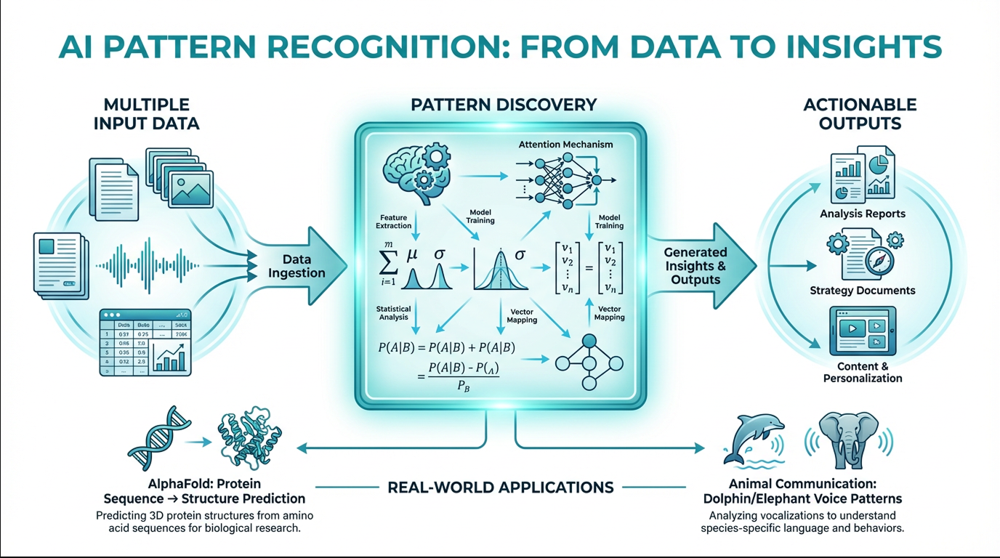
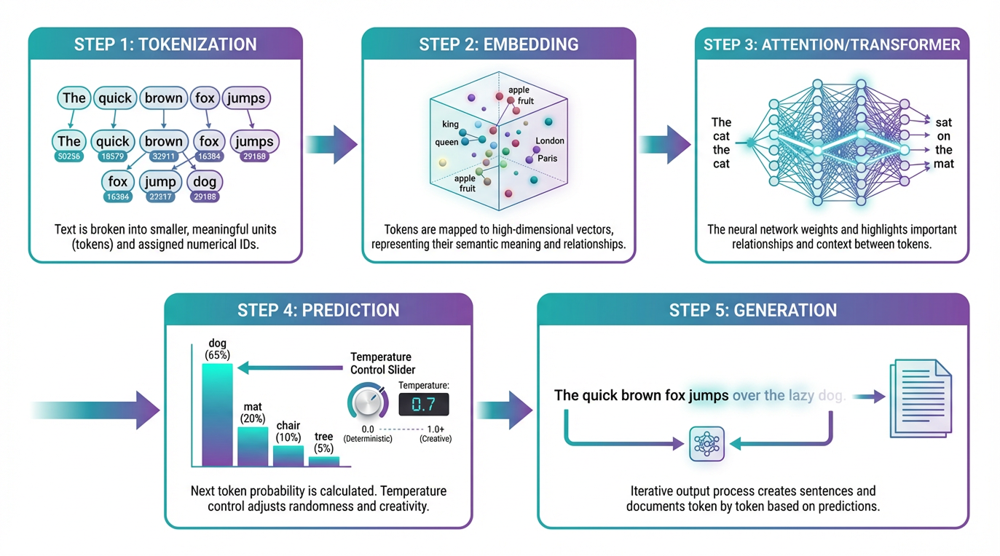
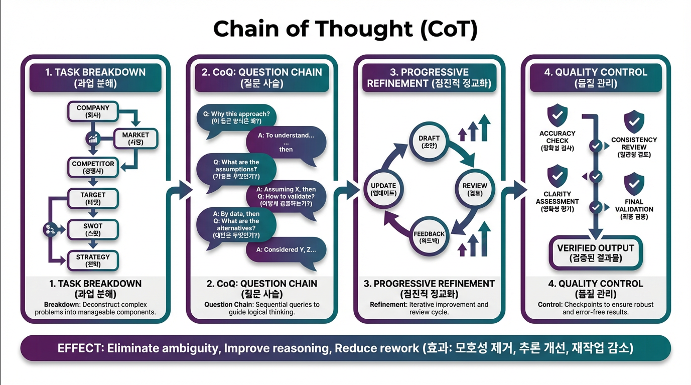
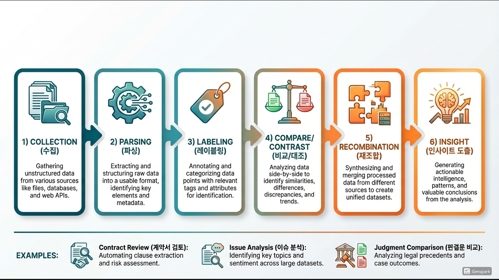

Marketing & AI Integration Strategy
마케팅 실무 고도화를
위한 AI 활용
전략 브리핑
"AI의 본질을 알아야 AI를 효율적으로 사용 가능하고,
AI로 대체 가능한 업무를 알아야 AI를 공부할 방향이 정해진다."
Agenda
전체 강의 구성 — 총 15개 챕터
Chapter 01 — Fundamental Understanding
AI의 본질: 패턴 인식 도구
방대한 데이터 속에서 숨겨진 규칙을 찾아 새로운 인사이트로 재조합하는 기술.
AI는 마법이 아니라 수학적 확률 계산기입니다.
주요 패턴 발견 사례
AlphaFold
단백질 구조 패턴 예측 — 50년 난제를 AI가 해결
동물 소통 해석
돌고래·코끼리 음성 패턴을 AI가 분석·해석
여론 신호 탐지
기사·커뮤니티 내 잠재된 위기 징후 조기 포착

마케팅 실무 적용
Chapter 02 — Ecosystem
AI 생태계 타임라인 (2017 ~ 2026+)
OpenAI
모델 성능 혁신 + 가장 넓은 사용자 기반
아키텍처 원천 기술 + 멀티모달 생태계
Anthropic
안전성·확장성 + MCP 표준 주도
Meta · Others
오픈소스 LLM + 검색·인프라·도메인 특화
AI 70년 역사에서 패러다임을 바꾼 6번의 전환점 — 각 시대가 어떻게 다음 시대를 만들었는지의 흐름입니다.
Chapter 03 — AI Mechanism
AI 작동 원리: 5단계 프로세스
입력된 데이터를 숫자로 변환하고, 확률적으로 다음 내용을 예측하여 생성하는 과정
토큰화 (Tokenization)
문장을 AI가 이해할 수 있는 최소 단위(토큰)로 쪼개고 고유 번호를 부여해 숫자 데이터로 변환
임베딩 (Embedding)
토큰을 다차원 벡터 공간에 배치. 의미가 유사한 단어끼리 (왕—여왕) 가까운 거리에 위치
어텐션 (Attention)
문맥 파악의 핵심. 단어 간 관계 중요도를 계산해 "어떤 단어에 집중할지" 결정
예측 (Prediction)
지금까지의 맥락을 바탕으로 다음에 올 가능성이 가장 높은 토큰의 확률 계산
생성 (Generation)
예측된 토큰을 출력하고, 이를 다시 입력으로 사용해 다음 내용을 이어가는 반복 과정

프롬프트는 AI가 방대한 벡터 공간에서 정확한 좌표를 찾아가도록 유도하는 나침반.
모호한 지시 = 엉뚱한 결과.
"Garbage In, Garbage Out"
Chapter 04 — Emergent Ability
창발적 능력 (Emergent Ability)
단순한 양적 증가가 질적 변화를 일으키는 현상.
"데이터와 연산량이 특정 임계점을 넘어서는 순간, AI는 가르치지 않은 능력을 갑자기 보여줍니다."
2025년~2026년, 모델 크기뿐 아니라 추론 시간(Test-Time Compute) 증가도 창발을 유발합니다.
셀프 대국으로 전략 창조
인간 기보 없이 3일간 Self-Play만으로 이전 버전 압도. 임계점 초과 시 AI가 스스로 전략을 창조함을 최초 증명.
추론 시간 증가 = 창발
인간 전문가 수준 달성, o1 대비 3배 정확도. 모델 크기가 아닌 추론 시간 증가만으로 질적 도약 유발.
에이전트 협력 & 컴파일러
16개 에이전트 동시 협력, C 컴파일러를 Rust로 작성해 Linux 커널 컴파일 가능 수준 달성.
Gemini 3 Pro
Humanity's Last Exam 23.4% SOTA — 기존 인간 전문가 수준 문제 세트 기준
AI 과학 발견
항암 신약 분자 설계 → 임상 시험 진입. AI가 연구자 역할 수행
의료 진단
2년간 미진단 소아 희귀질환을 수초 내 진단. 슈퍼 개인 시대 본격화
창발의 새 패턴: "생각을 오래 할수록 더 잘한다" — Test-Time Compute 증가만으로도 질적 도약 가능
Chapter 05 — Prompt Engineering
프롬프트 설계 6대 요소
명령 (Command)
AI가 수행해야 할 행동을 명확한 동사로 지시
예: "분석해줘", "요약해줘"맥락 (Context)
배경 정보와 상황, 제약 조건 제공으로 범위 좁힘
예: "20대 타겟 스타트업 상황에서"페르소나 (Persona)
AI에게 특정 전문가의 역할과 관점 부여
예: "당신은 10년차 PR 전문가"예시 (Examples)
원하는 결과물의 샘플 제공 (Few-shot Learning)
예: "아래 보도자료 스타일로"구성 형태 (Format)
최종 산출물의 구조와 형식 지정
예: "표로 정리", "JSON"톤앤매너 (Tone)
문체의 분위기와 어조 설정
예: "전문적이되 친근하게"Bad Prompt
Good Prompt (6요소 적용)
Chapter 06 — Chain of Thought
CoT: 생각의 연결 전략
복잡한 문제를 한 번에 해결하려 하지 않고, 논리적 단계로 나누어 AI의 추론 능력을 극대화하는 기법
과업 분해 (Task Breakdown)
복잡한 지시를 최소 단위로 쪼갭니다. 예: 마케팅 전략 → 시장분석 / 경쟁사 / 타깃 / SWOT / 실행안
질문 사슬 (CoQ — Chain of Question)
명령하지 말고 AI가 나에게 질문하게 합니다.
"이 전략을 짜기 위해 나에게 필요한 질문 5가지를 해줘."
점진적 정교화 (Refinement)
한 번에 완성품 요구 금지. 각 단계 산출물을 검토·수정해 다음 단계 입력으로 활용
품질 관리 (Quality Control)
중간 체크포인트를 설정해 논리적 비약이나 환각(Hallucination)이 없는지 검증

모호성 제거
Ambiguity ↓
추론 향상
Reasoning ↑
재작업 감소
Rework ↓
Chapter 07 — Strategic Approach
Self-Prompt 전략 매트릭스
나의 도메인 지식 수준과 과업의 복잡도에 따라 AI와의 소통 방식을 달리해야 합니다.
낮은 복잡도
높은 복잡도
높은 지식
낮은 지식
반성형 대화 예시
USER
"기업 위기 대응 매뉴얼을 만들고 싶은데, 네가 전문가로서 필요한 목차와 질문을 먼저 설계해 줘."
REFLEXION
"작성된 초안에 대해 가장 취약한 점 3가지를 찾아 비판하고, 이를 보완한 버전을 다시 제시해 줘."
Chapter 08 — Data Parsing
데이터 파싱: 해체와 조합
거대한 데이터 덩어리를 의미 단위로 쪼개고(Deconstruction), 새로운 관점으로 재조합(Reconstruction)
수집
Collection
파싱
Parsing
레이블링
Labeling
비교/대조
Compare
재조합
Recombine
인사이트
Insight
실무 적용 사례
계약서 분석
'을'의 관점 독소 조항 파싱 → 수정안 근거 재조합 → 검토 보고서
이슈/위기 분석
사건 타임라인 해체 → 인물별 입장·대립 관계도 재조합 → 대응 논리
경쟁사 분석
보도자료·SNS 파싱 → 메시지 프레임 분류 → 차별화 전략 수립

Chapter 09 — Tool Ecosystem · 2026년 3월 기준
AI 도구 생태계 비교 및 추천
| 도구 | 최신 버전 (2026.03) | 핵심 특징 | 추천 용도 |
|---|---|---|---|
| Claude Anthropic |
Sonnet 4.6 / Opus 4.6 | 언어 능력·복잡 추론 최강, MCP 네이티브 생태계 중심, 1M 토큰 | 글쓰기, 복잡한 추론, 코딩, 에이전트 워크플로우 |
| ChatGPT OpenAI |
GPT-5.3 / 5.4 | 시장 표준, Code Interpreter, 가장 넓은 생태계 | 범용 업무, 데이터 파일 분석, 이미지 생성 (DALL-E) |
| Gemini |
Gemini 3 Pro / 2.5 Pro | 멀티모달, 구글 생태계 통합, 1M+ 토큰 | 유튜브 영상 분석, 이미지·텍스트 복합, 구글 워크스페이스 |
| Cursor AI Anysphere |
Cursor 2.6 | 바이브 코딩, Composer, Plan Mode, Background Agents | 비개발자 앱/웹 제작, 자동화 스크립트, 데이터 수집기 |
| NotebookLM |
Gemini 3.1 Pro 기반 | 문서 기반 RAG, Video Overview, Slide Deck, Deep Research | 논문·보고서 대량 학습, 멀티포맷 지식 변환, 팟캐스트 요약 |
| Google AI Studio |
Gemini 2.5 / 3.x | 대용량 토큰(1M+), 무료 API 제공 | 책 수십 권 동시 분석, 대규모 데이터 처리 테스트 |
| Genspark | 최신 | 리서치 & 시각화, Sparkpage | 보고서/PPT 디자인, 복합 검색 결과 시각화 |
Writing & Logic
Claude Sonnet 4.6 / Gemini 3 Pro
Dev & Automation
Cursor AI / Claude Code
Visual & Research
Genspark / NotebookLM / Google AI Studio
Chapter 10 — Model Context Protocol
MCP 개념 및 등장 배경
Before — M × N 문제
After — M + N (MCP)
Protocol
유지보수 비용 급증 — M×N개 커스텀 코드를 각각 관리해야 함
표준 없음 — AI가 바뀌면 모든 도구 연결을 처음부터 재작성
MCP 도입 후 — 각 AI와 각 도구가 MCP 하나만 구현하면 자동 연결. Anthropic 2024 발표 → Linux Foundation 중립 거버넌스 이관.
생태계 현황 (2026.03)
5,800+
MCP 서버
300+
클라이언트
97M+
월간 SDK 다운
Chapter 11 — MCP Architecture
MCP 아키텍처 & 실무 연결
MCP가 제공하는 3가지 기능
AI가 외부 시스템에 액션 수행 — GitHub에 이슈 생성, Slack 메시지 전송
외부 데이터를 AI에게 컨텍스트로 제공 — Notion 문서, DB 쿼리 결과 읽기
재사용 가능한 프롬프트 템플릿 — 사내 표준 보고서 템플릿 자동 호출
PR 위기 대응 자동화 시나리오
Chapter 12 — Vibe Coding
바이브 코딩 실전 가이드
코드를 직접 작성하지 않고, 자연어 지시만으로 AI가 코드를 생성하게 하는 개발 방식.
비개발자도 필요한 자동화 도구를 직접 만들 수 있습니다.
Cursor AI 2026 주요 기능
자체 코딩 모델 — Sonnet 4.5 대비 약 2배 속도
실행 전 단계별 계획 수립 후 승인 → 실행 (CoT 자동 적용)
여러 에이전트가 동일 프로젝트에서 병렬 작업
Figma, Amplitude 등 외부 서비스를 IDE 안에서 바로 조작
4단계 파이프라인
Pattern Recognition
타겟 웹사이트 구조 및 데이터 패턴 학습
Scraper Generation
"이 사이트 뉴스 긁어와줘" → Cursor가 코드 자동 생성
Data Extraction
수집된 데이터를 CSV/JSON 구조화된 파일로 저장
Integration
분석용 LLM 프롬프트 파이프라인으로 데이터 연결
Chapter 13 — Automated Workflow
업무 자동화 워크플로우 — 마케팅 실무 전반
기존 PR 여론 분석에서 마케팅 업무 전반으로 확장한 5단계 자동화 파이프라인
수집 (Collection)
Cursor 웹 스크래핑: 뉴스 사이트, 커뮤니티, SNS 데이터 추출 → CSV 적재
전처리 (Preprocessing)
Python 데이터 정제 (중복 제거, 광고 필터링) + 메타데이터 태깅
분석 (Analysis)
LLM 프레임 분석 (논조 파악) + 감성 분석 + 핵심 행위자 추출
생성 (Generation)
일일 동향 보고서(Daily Brief) 초안 자동 작성 + 시각화 대시보드
저장 (Storage)
Obsidian Second Brain — 원본 출처(Source) 링크 유지로 환각 방지
마케팅 업무별 자동화 적용
| 업무 영역 | 자동화 방식 |
|---|---|
| 보도자료 모니터링 | 스크래퍼 → 감성 분석 → 일일 브리핑 |
| SNS 트렌드 분석 | 크롤링 → 키워드 추출 → 캠페인 인사이트 |
| 경쟁사 동향 | 웹사이트·블로그 모니터링 → 전략 변화 감지 |
| 콘텐츠 기획 | 성과 데이터 파싱 → 고성과 패턴 → 소재 추천 |
| 위기 감지 | 실시간 스크래핑 → 이상 감지 → 즉시 알림 |
90%
리드타임 단축
24/7
실시간 모니터링
Chapter 14 — Dual Brain Strategy
AI 듀얼 브레인 종합 전략
Human 인간
- 문제 정의
- 윤리·판단
- 전략 방향
- 최종 의사결정
- 맥락(Context) 제공
AI Agent
- 패턴 탐지
- 초안 생성
- 데이터 처리
- 반복 업무 자동화
- 대규모 정보 분석
프롬프트 시스템
업무별 최적화된 프롬프트 템플릿 라이브러리 + CoT 설계 표준화
데이터 파싱 프레임
비정형 데이터(뉴스, 계약서)를 구조화된 데이터로 해체 및 재조합
MCP 통합
사내 DB, Slack, Notion 등과 AI를 안전하게 연결하는 프로토콜
바이브 코딩 툴킷
실무자가 직접 스크래퍼 및 자동화 도구를 Cursor AI로 즉시 제작
품질 KPI
리드타임 단축, 정확도, 커버리지 등 AI 협업 성과를 정량적으로 측정
거버넌스
환각 방지, 보안 가이드라인, 프롬프트 버전 관리 및 윤리 규정
기대 성과: 생산성 10~50배 향상 · 일관된 품질 (Standardized) · 무한한 확장성 (Scalability)
Chapter 15 — Conclusion & Next Steps
마무리 및 7-Day Action Plan
"AI, 모르고 사용하면 호구당한다. AI를 알아야 내가 원하는 대로 세팅이 가능하다."
— 성강현
환각 방지
원본 출처 명시 필수. 중요 사실은 반드시 검증
보안
민감 개인정보·기밀 AI 입력 금지
저작권
AI 생성물 권리 관계 확인 후 외부 공개
버전 관리
성공한 프롬프트 자산화(DB화) 및 팀 공유